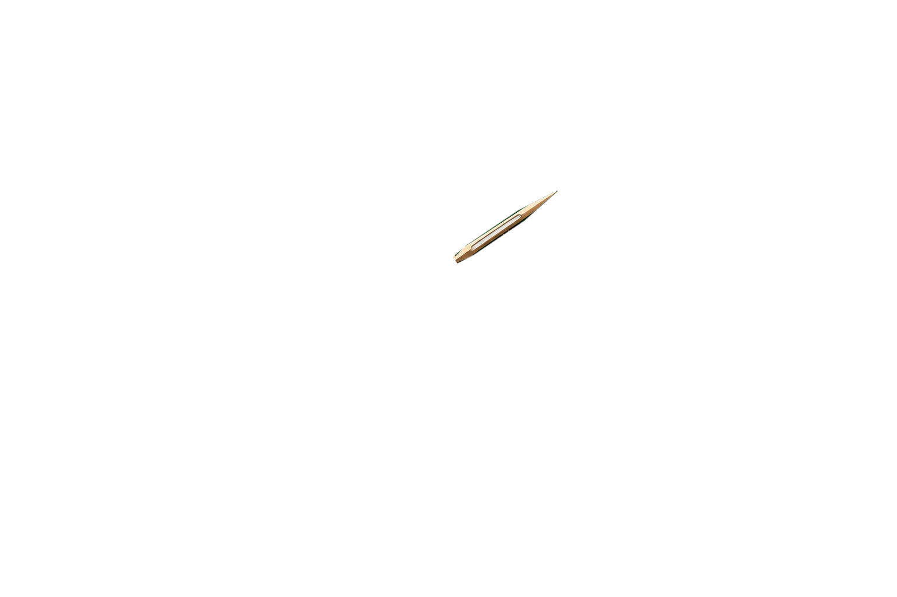
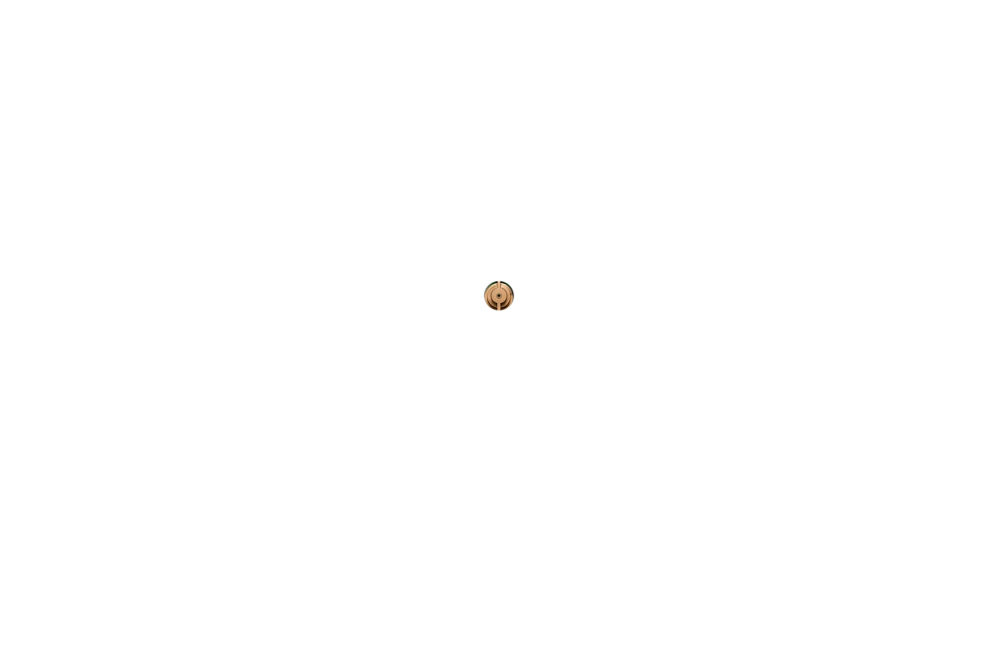

meridiano 12°20′ E
scorri di lato
Venezia · autunno




N. 041 · Patavium
Adesso: la Piazzetta: dal Campanile, nell’agosto 1609, Galileo mostrò il cannocchiale ai senatori.
Allora: Padova, gennaio 1610: Galileo e la luna.